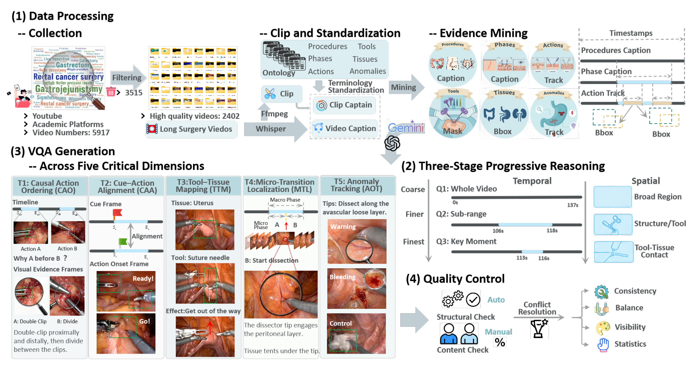
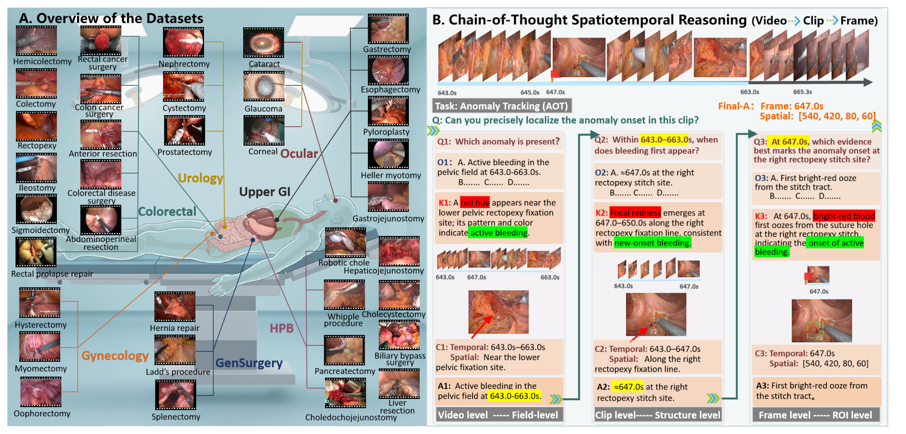
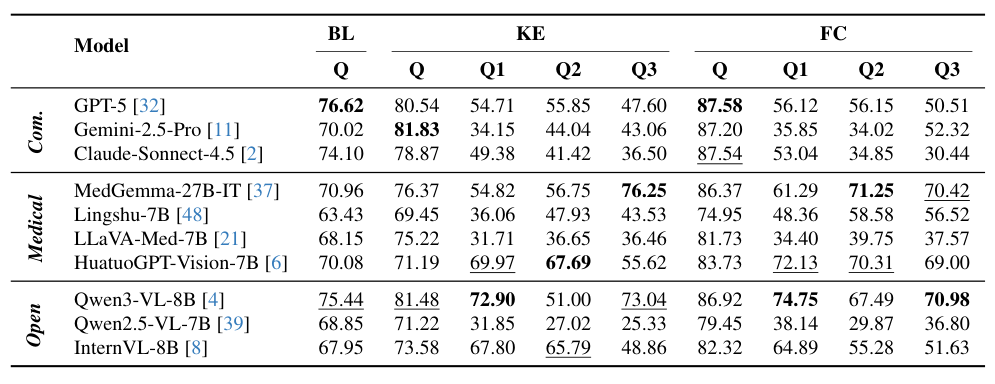
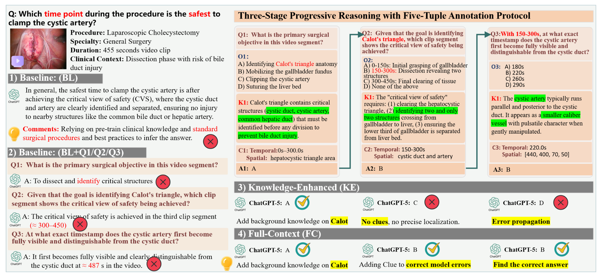

图文解读
1背景与动机
已有手术问答基准大多问"这一帧里有什么",外科判断却依赖"什么时候、在哪里、为什么先做"。 作者把已有基准分成两类:通用基准问阶段、器械这类问题;专科基准范围窄,多为帧级或片段级问答。两类都把视频切成离散片段,不测跨时间的推理。
MLLM 已经能做阶段识别和器械识别,但这些任务答对,不代表它能沿时间轴推理。论文要回答:MLLM 能否在不同手术场景中做渐进的时空推理和因果判断。
2核心观点速览
论文的做法是把一道视频题拆成三级,并把"医学知识"和"画面线索"分开提供。
- 数据:8917 个病例筛到 2841 个视频,覆盖 7 个专科 35 种术式。
- 协议:每题拆成视频级 Q1、片段级 Q2、帧级 Q3,每级五个字段:问题、选项、知识、线索、答案。
- 评测:同一道题在基线、知识增强、全上下文三种设置下各答一次。
- 结果:全上下文下 GPT-5 平均 87.58% 最高;知识增强下它的主问题 80.54%,Q3 只有 47.60%。
边界:没有随机基线和纯文本对照,线索可能直接含答案。
3题目从哪里来
视频来自 YouTube、ASVIDE 等公开平台、十个开源数据集和临床档案。按术式完整、临床有效、有双语讲解三条标准筛选,保留 31.9%。
证据挖掘把讲解视频变成带时间戳的监督信号:
- 用 ASR 字幕做语义锚点,标出术式和阶段。
- YOLOv10 检测组织,SAM2 分割器械,ByteTrack 跨帧跟踪。
- 根据外观变化检测动作起点,异常用轨迹标注起始时间和区域。

问答文本由人写还是大模型生成,论文未说明。Fig 2 在字幕生成后出现 Gemini 和 ChatGPT 的标志,而这两家的模型又在被测之列。
下一节看题目长什么样。
4三级拆题与五元组
三个阶段逐级收窄范围:Q1 判断整段视频里是否发生目标事件;Q2 在片段内判断何时何处首次出现;Q3 在亚秒级定位起始帧和区域。
$$(Q_1,O_1,K_1,C_1)\Rightarrow A_1 \rightarrow (Q_2,O_2,K_2,C_2,A_1)\Rightarrow A_2 \rightarrow (Q_3,O_3,K_3,C_3,A_2)\Rightarrow A_3$$
式中五个字母依次表示问题、选项、知识、线索、答案。知识给"为什么",线索给"何时何处"。 分开投放后,可以区分模型是缺医学知识还是找不到画面。

五个维度是:因果动作排序 CAO、线索-动作对齐 CAA、可供性映射 AM、微转换定位 MTL、异常起始追踪 AOT。
评测时 Q2、Q3 的前提是标准答案还是模型自己的答案,论文未说明。用标准答案时测单步能力,用模型答案时测累积误差,两种情况下 Q3 的含义不同。
5怎么评测
三种设置:
| 设置 | 给模型什么 |
|---|---|
| 基线 BL | 视频和主问题 |
| 知识增强 KE | 再加知识字段,依次回答 Q1 到 Q3 和主问题 |
| 全上下文 FC | 再加线索字段 |
解码统一:temperature = 0.0,最多生成 4096 个词元,不重试。指标是准确率。
每题几个选项、随机基线多少、视频抽几帧,论文都未说明。没有随机基线,就无法判断 CAO 上 90% 左右的分数离瞎猜有多远。
下一节看分数。
6结果说了什么
| 模型 | BL | KE | FC |
|---|---|---|---|
| GPT-5 | 76.62 | 80.54 | 87.58 |
| Claude-Sonnet-4.5 | 74.10 | 78.87 | 87.54 |
| Gemini-2.5-Pro | 70.02 | 81.83 | 87.20 |
| Qwen3-VL-8B | 75.44 | 81.48 | 86.92 |
| MedGemma-27B-IT | 70.96 | 76.37 | 86.37 |
| Lingshu-7B | 63.43 | 69.45 | 74.95 |
全上下文下前三名是商用模型,但与开源的 Qwen3-VL-8B 只差 0.66 个点;基线下 Qwen3-VL-8B 反而高于两个商用模型。 单次运行,没有置信区间,"商用全面领先"在基线下不成立。
维度难度差别很大。CAO 本质接近二选一,全上下文下 8 个模型超过 96;AM 和 AOT 最难。
增益并不单调:从基线到知识增强,10 个模型中有 9 个至少在一个维度下降。例如 Claude 的 MTL 从 79.49 降到 72.45。
正文说 Claude 加线索后提高约 13.44,实际是 BL 到 FC 的差,KE 到 FC 只有 8.67。
7子问题跟不上主问题

知识增强下,GPT-5 主问题 80.54,Q3 只有 47.60;Gemini-2.5-Pro 主问题 81.83,Q1 只有 34.15。子问题的排名与主问题不同:MedGemma-27B-IT 的 Q3 为 76.25,高于三个商用模型。
加线索也不一定有用:Claude 的 Q3 从 36.50 降到 30.44,Gemini 的 Q2 从 44.04 降到 34.02。论文没有解释。
另一种解释是子问题更难判分,Q3 要求精确时间点,选项可能更相近。各级的选项数论文未说明,所以"子问题低"不一定等于"推理链断裂"。
8结果没说什么

Fig 4 是线索纠错的唯一案例。其中第二个子问题的线索写"时间 150 到 300 秒",正确选项也正是"150 到 300 秒"。如果线索普遍这样贴近答案,全上下文测的是读提示,不是时空定位。
论文没有分开的几件事:
- 知识和线索带来的增益,与子问题拆解本身的提示作用。
- 模型看视频与只读题面的差别,需要纯文本对照。
- 推理能力与视频输入方式的差别,接口模型与本地模型的帧数可能不同。
9复现与使用要注意什么
我在 2026-11-07 查看了 Hugging Face 上公开的数据:
- 主问题文件分训练 11218 条、测试 4825 条,答案是自由文本,不是选项字母。
- 测试集的 1869 个视频中,1867 个也出现在训练集里,划分按问题而不是按视频。
- 线索以视频片段路径给出,没有看到独立的知识字段;视频打包为约 328 GB 的压缩包。
- 代码仓库只有说明文档,评测代码尚未发布。
这些与论文的多选、五元组描述不完全一致,使用前要先确认判分方式。